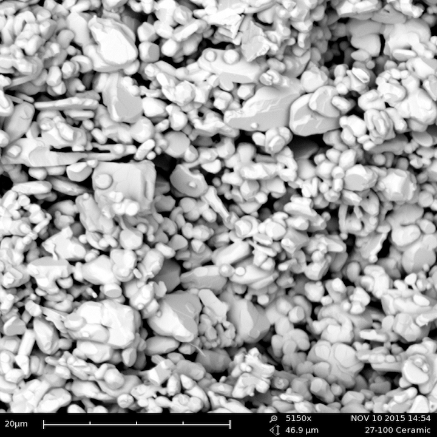
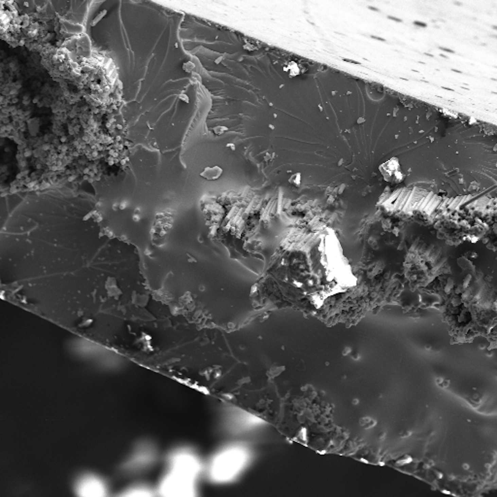
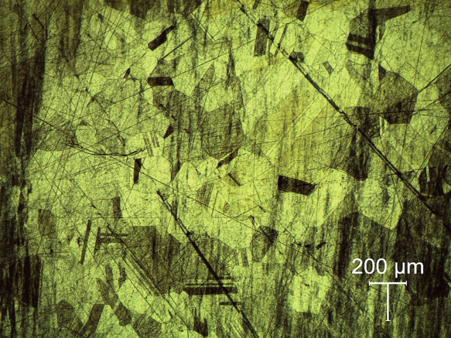
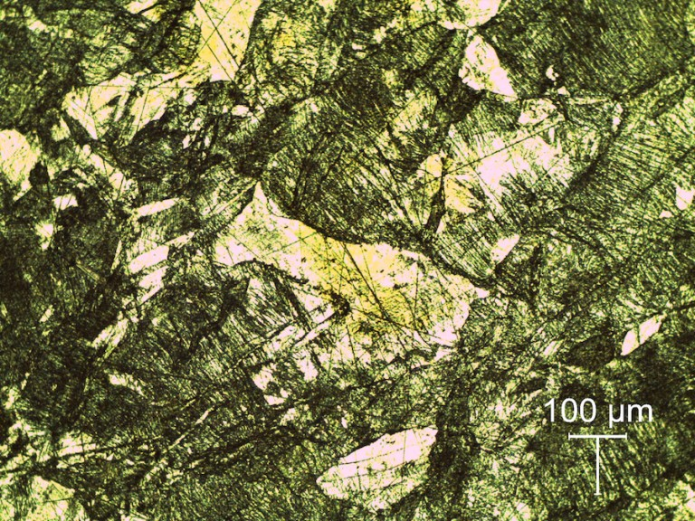
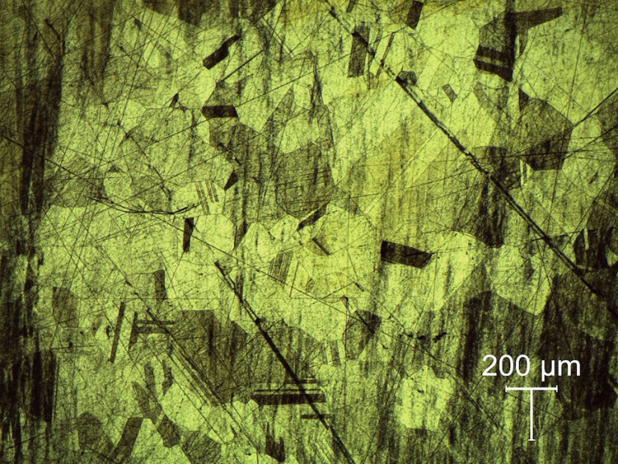
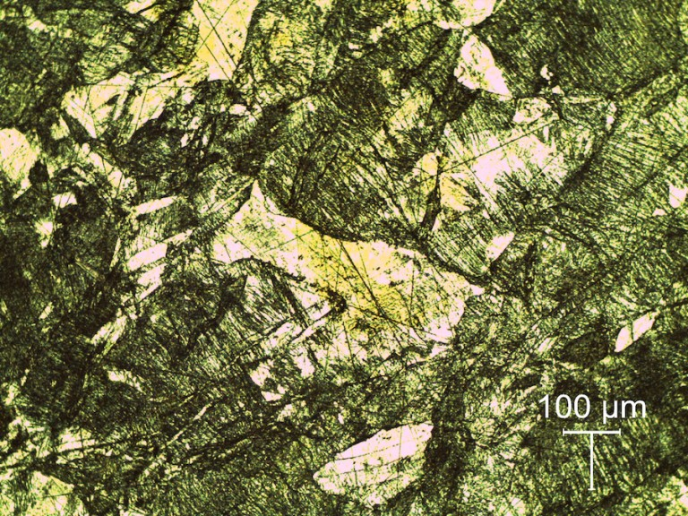

SEM and Optical Microscope Materials Science Lab
After creating samples of common ceramics, polymers, and metals, I along with 3 other team members, destroyed those samples by applying various loads, then looked at their failures and took awesome photographs under an microscope for an introductory Materials Science course. Some images from a SEM (operated with the assistance of a TA) of a ceramic and carbon fiber sample after tensile failure.


Below are images from an optical microscope of brass samples as created, then after exposing them to treatments like cold work and recrystallization.
 


